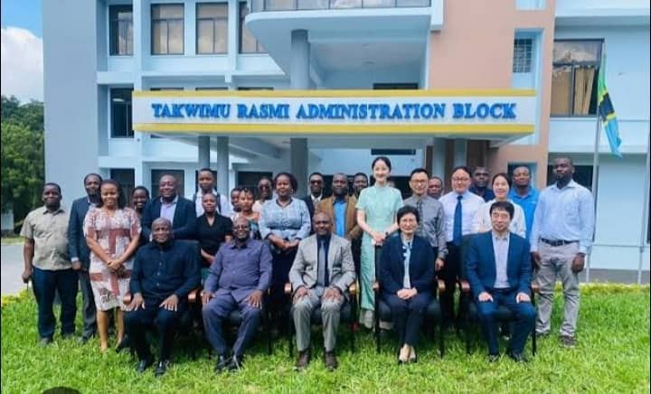

About EASTCSO
Learn about our mission, values, and the history of student representation at EASTC.
About the Organization
The EASTC Students Organization (EASTCSO) is the official student body of the Eastern Africa Statistical Training Centre in Dar es Salaam, Tanzania. Established to represent the interests of all students, EASTCSO fosters academic excellence, cultural exchange, and holistic student development.
We work closely with faculty and administration to ensure that students have a meaningful voice in decisions that affect their academic and social lives. Our activities range from academic seminars and career fairs to cultural events, sports, and community outreach programs.
EASTCSO is structured around dedicated committees covering academic affairs, welfare, sports, culture, and communications — ensuring that every aspect of student life receives the attention it deserves.
Our Mission
To unite EASTC students under a common purpose — advancing academic achievement, nurturing leadership, promoting cultural diversity, and building a vibrant, inclusive campus community.
Our Vision
To be the most respected student organization in East Africa — producing graduates who are academically excellent, socially responsible, and professionally ready.

Our Core Values
Academic Excellence
Promoting a culture of hard work and intellectual curiosity.
Unity
Bringing together students from diverse backgrounds as one community.
Student Voice
Ensuring every student is heard in matters that affect them.
Integrity
Acting with honesty and transparency in all organizational activities.
Innovation
Encouraging creative thinking and problem-solving among members.
Service
Contributing positively to the campus and wider community.
History & Milestones
- 1985EASTCSO FoundedThe organization was established alongside EASTC to give students a formal voice on campus.
- 1992First Constitution AdoptedA formal constitution was drafted and ratified, establishing the governance framework.
- 2005Clubs & Societies ProgrammeEASTCSO launched 12 official student clubs covering sports, culture, academics, and technology.
- 2015Annual Career Fair LaunchedPartnership with regional employers to host a yearly career development and networking fair.
- 2023Digital TransformationEASTCSO went online — launching a digital communication platform and student portal.
- 2026New Web Portal LaunchedThis portal was developed by Web Design & Development students to modernize EASTCSO's presence.